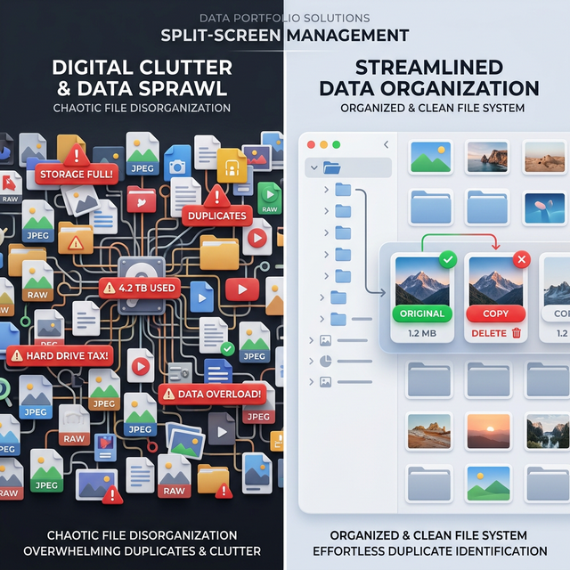

How I architected a high-fidelity visual system to eliminate deletion anxiety and restore trust in digital archiving for content creators.

Duplicate File Finder is a lightweight, high-performance desktop application designed to solve the chronic "Data Sprawl" faced by creative professionals. Built with Python and PyQt6, it utilizes perceptual hashing to identify visually identical files across messy storage architectures, allowing creators to reclaim space with 100% confidence.
The product isn't just a utility; it's a trust framework. It moves beyond the clinical 'list of files' offered by competitors and provides a visual gallery experience optimized for rapid-fire review of high-value assets like RAW photos and edited masters.
"My wedding photos were a total mess. Duplicates were scattered across seven different drives, and I couldn't tell which was the 'master' version. I tried every tool on the market—they were either expensive subscription traps or clinical spreadsheets that I didn't trust with my memories."
The Core Conflict: Creators are drowning in duplicates, but they suffer from Deletion Anxiety. Existing tools solve the "Find" problem but fail the "Review" problem.
During my research, I identified that the friction wasn't in *finding* duplicates, but in the *moment of truth*—hitting the delete key. Without visual confirmation, the risk of losing a one-of-a-kind memory far outweighed the reward of 10GB of free space.
We defined success as the ability to move from Discovery to Deletion in under 60 seconds for a 1,000-file group. We didn't just want a fast engine; we wanted a fast human-decision loop.
Why these metrics? Because for creators, Trust = Technical Performance + Visual Clarity. If the UI lags, the trust breaks.
I reached out to photographers and fellow creators to see if I was alone in this. The discovery was shocking:
Scenario: Has three "Session" dumps from a wedding shoot. Two are blurry
edits, one is the final master.
Goal: Kill the edits, keep the RAW
originals. Fast decision-making is critical.
Scenario: Has consolidated five family PCs onto one drive over 15 years.
Goal: Find the best resolution version of family photos from 2005,
regardless of filenames.
My strategy was "Performance & Function over Flair." Every architectural and UI decision prioritized the core utility: finding the copy and keeping the original with zero friction.
Core Capability: A "Decision Engine" that does the heavy lifting for you.
Try clicking a different card to promote it to 'Original'. Note how the badges update instantly.
As a PM, I managed this as a Creator-Led MVP. We followed a strict "Stable-First" philosophy. We focused on the "Happy Path" first: Exact binary duplicates.
Once we nailed safety, we moved to the "Performance Path": Enabling the app to handle 1,000+ groups without the Windows "Not Responding" ghosting. We used an Incremental Batch Rendering approach, prioritising user interactivity over complete dataset loading. This means a user can start working on the first 10 groups while the remaining 990 load in the background.
| Feature / Initiative | Status | Strategic Reasoning |
|---|---|---|
| Async Loading (1k+ Files) | SAVED | Non-negotiable. UI 'hanging' leads to zero user trust in file safety and engine stability. |
| Custom Visual "Smart Badges" | SAVED | Aids rapid-fire decision making for high-volume creators. Eliminates decision fatigue. |
| Cloud Sync (G-Drive/iCloud) | KILLED | Too much scope creep; prioritized local drive stability and performance for the MVP. |
| Video Hashing Engine | KILLED | Technical cost too high for v1. Focused on the 80% Image use-case to ensure a polished launch. |
Iteration 1: Direct utility focus. I used my own photo library as the first "User Sample" to identify edge cases in directory structures.
Iteration 2: Shared with a core photographer peer group for "Stress Testing." The feedback was unanimous: "Don't add more buttons, just make the 'Original' label more obvious." We followed this advice strictly, removing three secondary buttons to clear the UI clutter.
Since the V2 overhaul focused on animations and badge clarity:
I would have focused on Metadata Intelligence earlier. Many creators rename files (e.g.,
Wedding_Final.jpg vs DSC0942.jpg). Our engine currently relies on visual
hashes and resolution. Integrating AI-based quality assessment (e.g., picking the one with better
exposure or focus) is the next bridge to cross for professional-grade utility.
/Archived_Work/) to protect it from any automated suggestions.
This project taught me that the best products solve an internal itch. By building for myself as a creator, I was able to identify the "Deletion Anxiety" friction point that generic tools completely missed.
Final Reflection: Good PM work isn't about the quantity of features; it's about the quality of the decisions *not* to add features that distract from the core utility.